Home · Things To Do
Start with a paddle on our own canal, then explore the Broads, the coast, wild places and family favourites. Almost everything here is within a short drive.

The best thing to do at Dilham is the simplest. Take a canoe, kayak or paddleboard out on our quiet, traffic‑free canal. It is the easiest way onto the Broads, and it is right outside.
Canoe hire & prices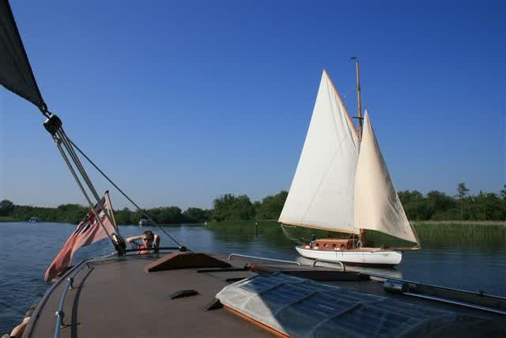
Barton BroadReserve and home of the rare swallowtail butterfly Under 15 miles 01603 625540 · norfolkwildlifetrust.org.uk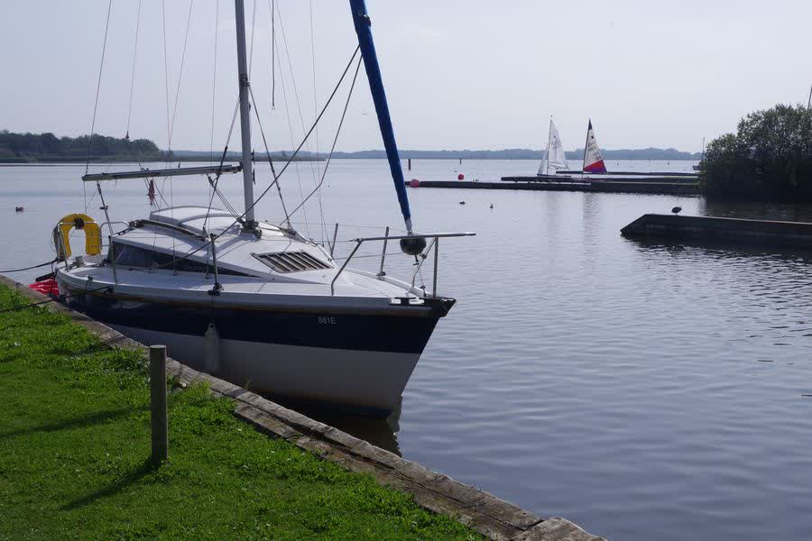
Hickling BroadCircular walks, viewing platforms and an observation tower Under 15 miles 01692 598276 · norfolkwildlifetrust.org.uk Our 95‑acre reserveDeer, birds and rare species on a protected SSSI On site
Our 95‑acre reserveDeer, birds and rare species on a protected SSSI On site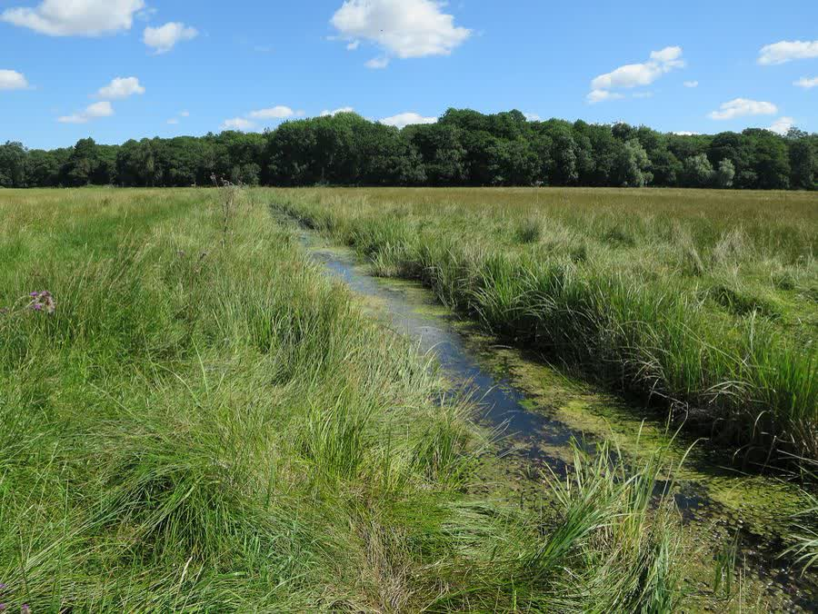
Strumpshaw FenReedbed specialists, bitterns and spring orchids 30 minutes 01603 715191 · rspb.org.uk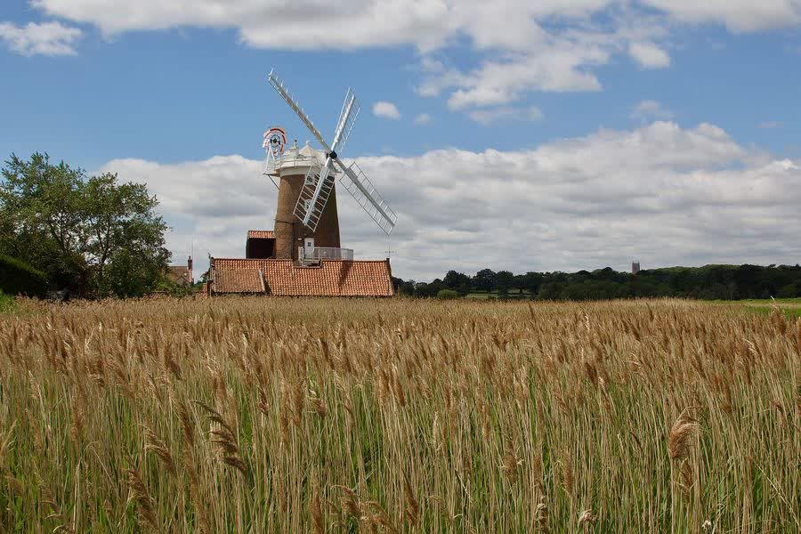
Cley MarshesWaders, warblers and rare migrants 40 minutes 01263 740008 · norfolkwildlifetrust.org.uk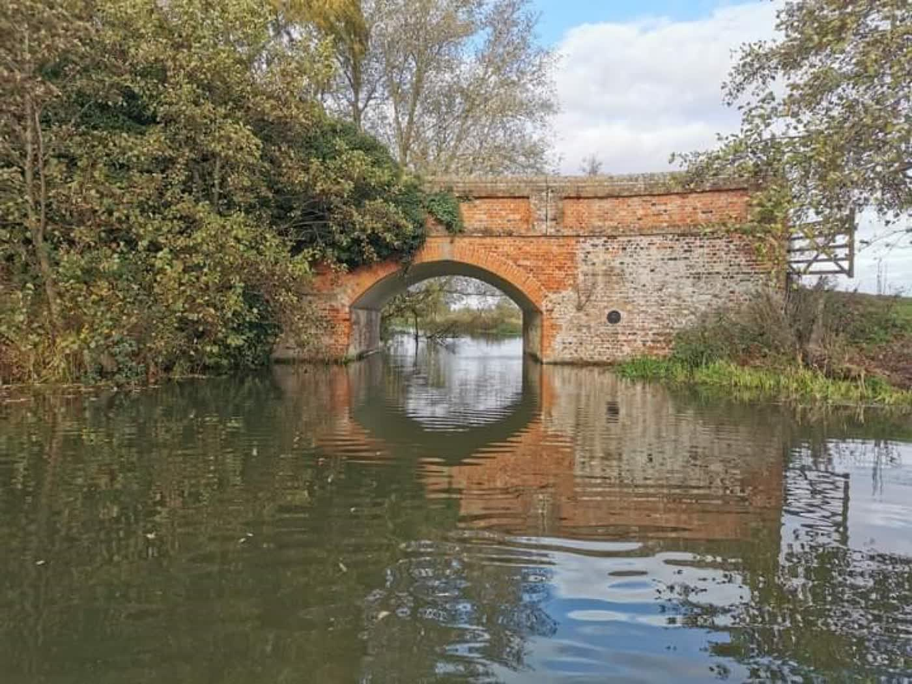
Our circular canal walkA gentle 3.5km loop straight from the pods On site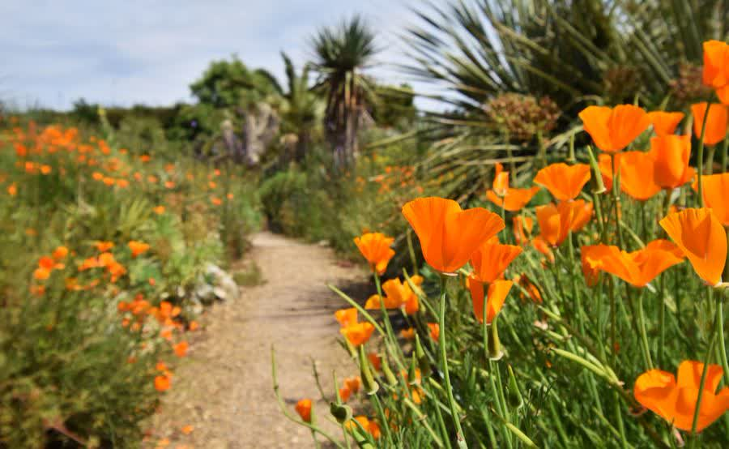
East Ruston Old VicarageThemed gardens with teashops Under 5 miles 01692 650432 · eastrustonoldvicarage.co.uk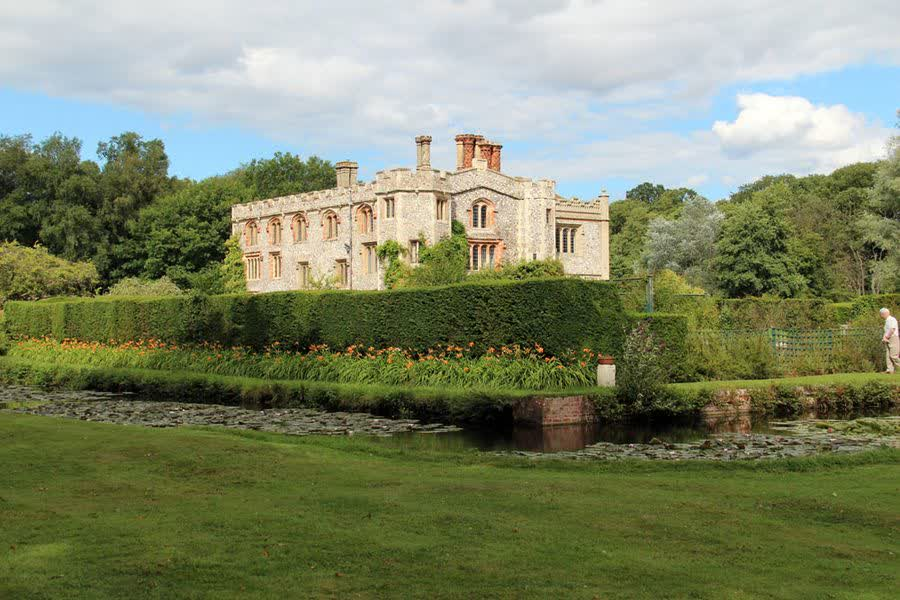
Mannington GardensFootpaths through coppice woodland and meadows Under 20 miles 01263 493275 · mannington.co.uk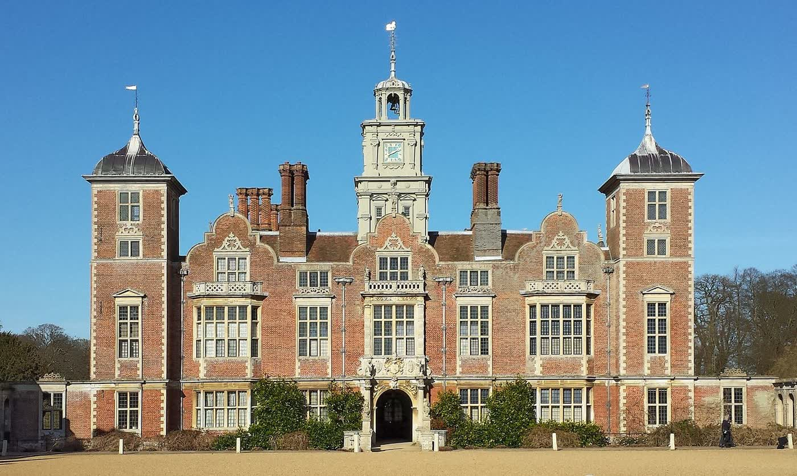
Blickling EstateA 400‑year‑old house, gardens and parkland (National Trust) Under 15 miles 01263 738030 · nationaltrust.org.uk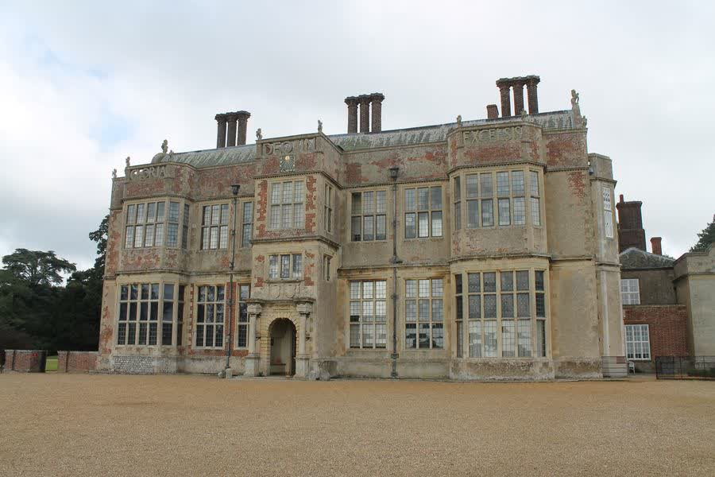
Felbrigg Estate17th century hall, woodland and gardens (National Trust) Under 20 miles 01263 837444 · nationaltrust.org.uk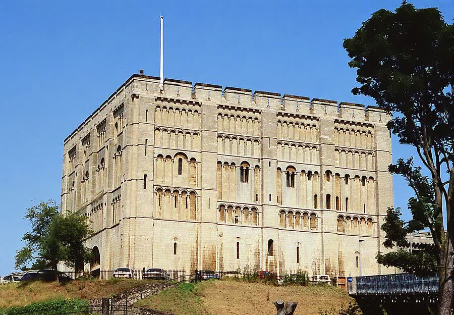
Norwich Castle MuseumNorman keep, art and history Under 15 miles 01603 495897 · museums.norfolk.gov.uk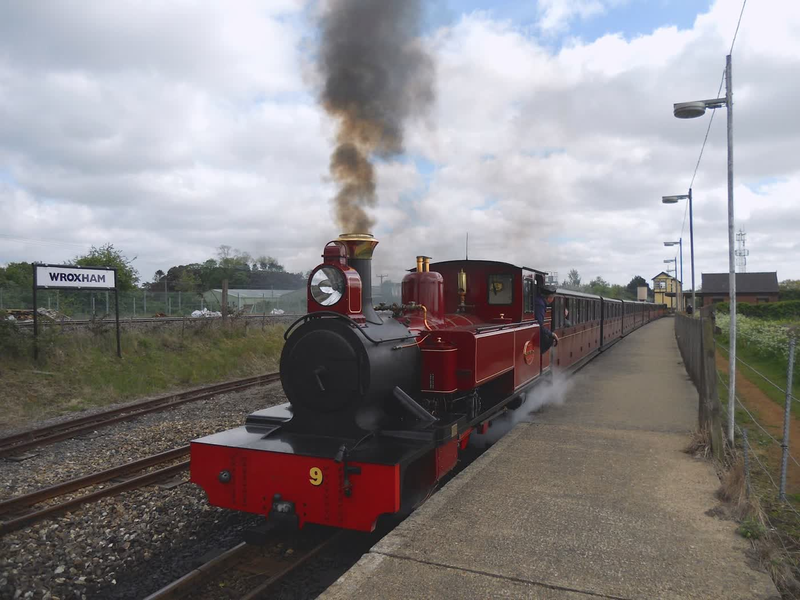
Bure Valley RailwayNorfolk’s longest narrow‑gauge railway Under 5 miles 01263 733858 · burevalleyrailway.co.uk Sandy beachesWide Norfolk sands, perfect for a beach day 5 miles
Sandy beachesWide Norfolk sands, perfect for a beach day 5 miles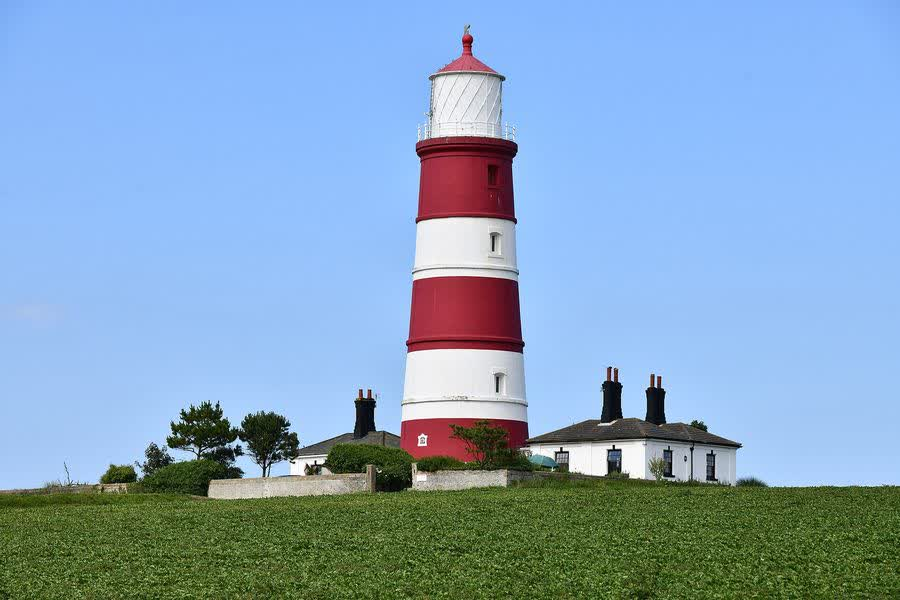
Happisburgh LighthouseThe UK’s only independent lighthouse. Open days in summer, booked online. Under 10 miles happisburgh.org.uk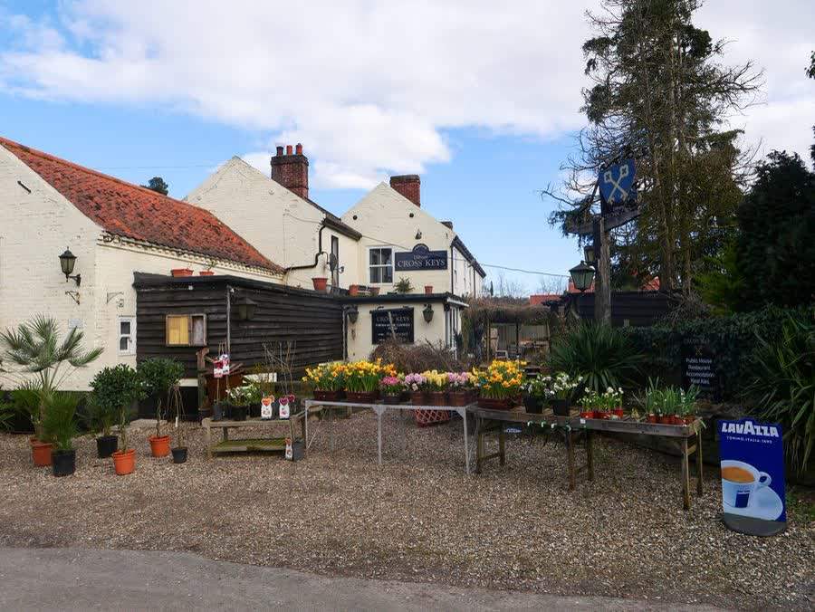
Our localThe Cross Keys, DilhamThe village pub on our doorstep. Good food, real ales and a proper warm welcome. Closest to us 01692 536398 · crosskeysdilham.com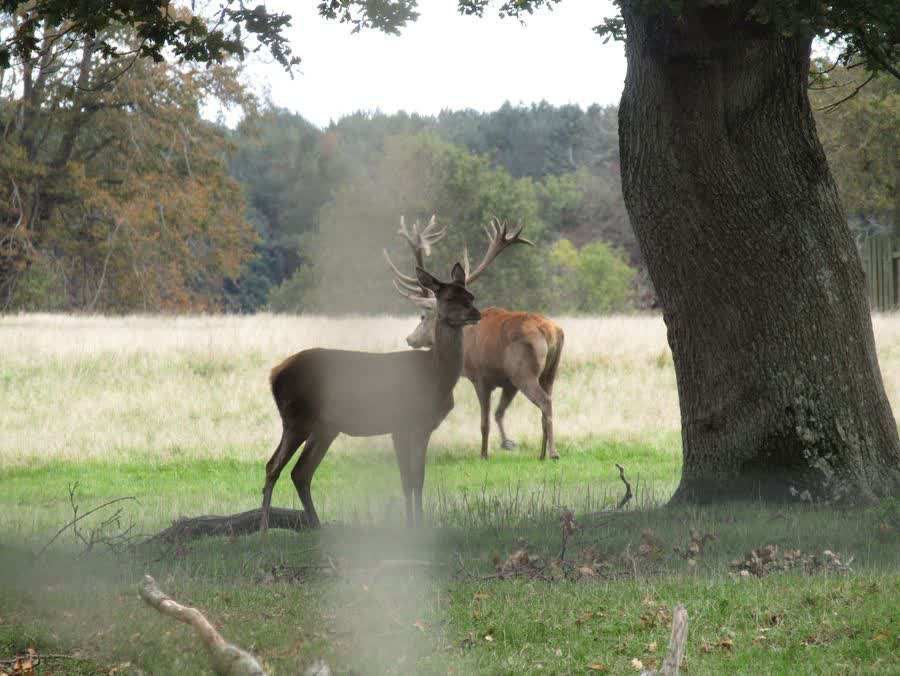
The Gunton ArmsAcclaimed pub in a deer park, with food cooked over an open fire Nearby 01263 832010 · theguntonarms.co.uk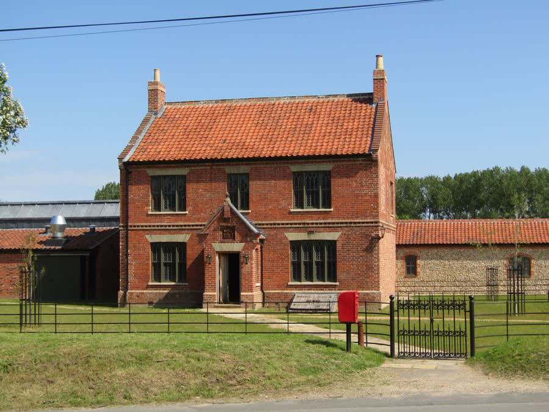
The Suffield ArmsCharacterful spot for a drink or a meal Nearby 01263 586858 · suffieldarms.comSome photos on this page and our home page are by local photographers, via Wikimedia Commons: the Cross Keys, the canal at Tonnage Bridge and Bacton Wood © David Pashley; the Suffield Arms and the Gunton Park deer © Kolforn; Happisburgh Lighthouse © Michael Garlick; Strumpshaw Fen © Hugh Venables; Norwich Castle © Jeff Buck; Mannington Hall © John Salmon; Barton Broad © Katy Walters; Hickling Broad © Stephen McKay; Blickling Hall © DeFacto; Felbrigg Hall © Amy Letts; Bure Valley Railway © PeterSkuce; Cley windmill © Randusr836 (all CC BY‑SA 2.0 or CC BY‑SA 4.0); swallowtail butterfly © gailhampshire and East Ruston Old Vicarage © Mark (CC BY 2.0). Images have been resized.
Base yourself here, ideally midweek when it is quietest and best value, and tick off as much as you like. Find the retreat that suits you and pick your dates.